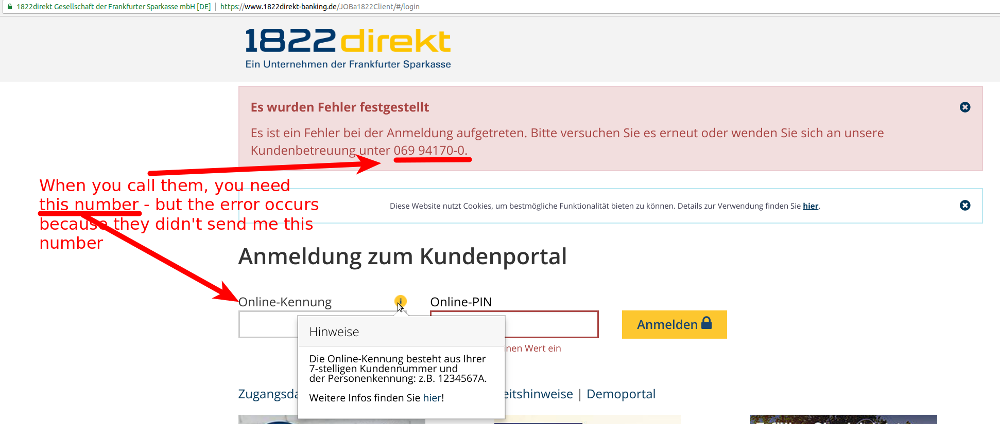
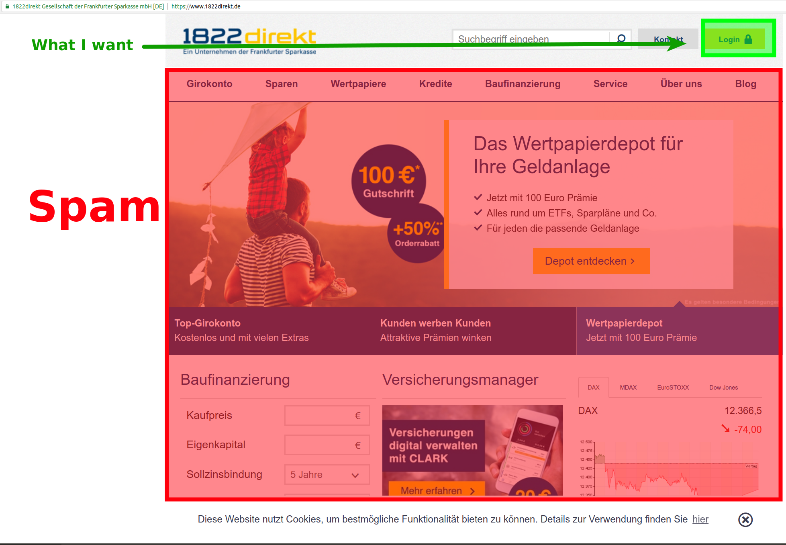
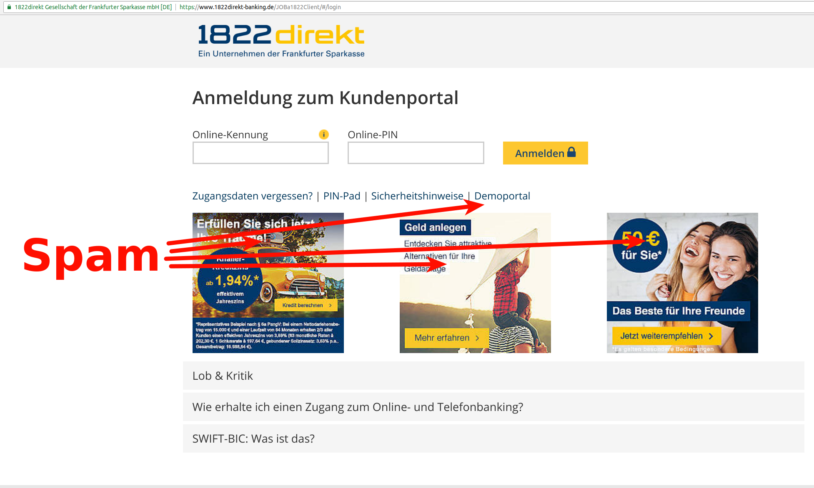
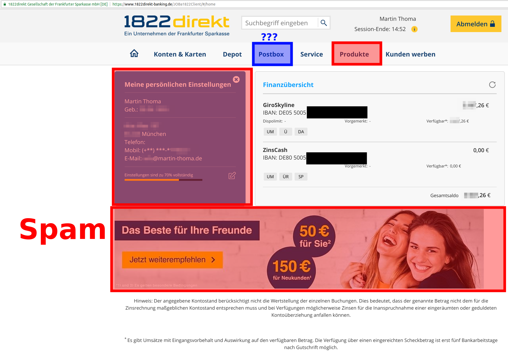
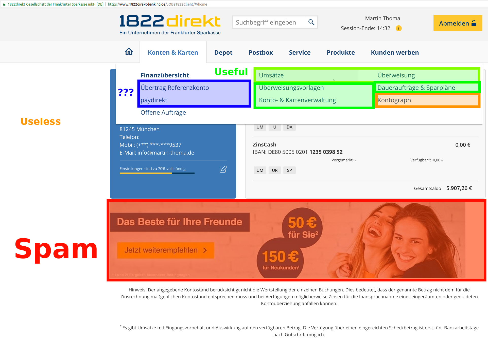
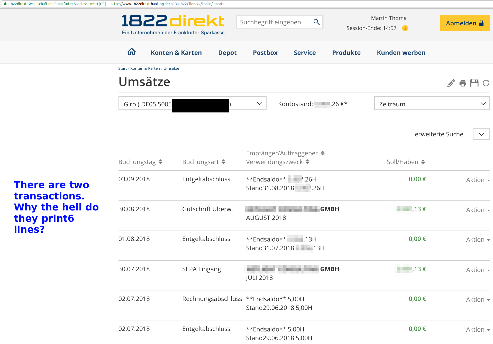
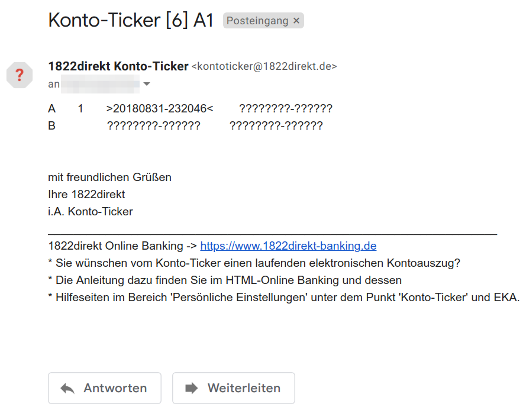

Creating a bank account is one of the things you need to do when you stay in a country for a longer time, but it is incredibly difficult if they don't offer enough information online - especially if you don't speak the language.
I had a pretty good experience with N26, let's see how it goes with 1822direkt.
Registration
Overall, I can say the registration process is super bad. I started the registration process on 2018-05-20.
- German only
- It took me 3 tries because the website just decided to push me back to the beginning of the 3-step registration process at some point.
- I need to print something, sign it and send it in via letter - that was not necessary with N26!
- The printed documents (3 pages) do not contain the address. It was printed really tiny on the last page on the bottom right corner. At least I hope that this is the address.
- I need to do POSTIDENT at a post office - also not necessary with N26.
Waiting
- 2018-05-29 I got the first E-Mail from 1822direkt. Of course, they ask me to participate in a survey about how I like their "service" (what do you call the lack thereof?) 😠.
- 2018-05-30: They sent the letter with my "Online-PIN" (10 alphanumeric), my "Telephone-PIN" (6 digits) and my "Personenkennung" (a single letter). The subject of the letter is "PIN I D [8 digits]-[7 digits]/[7 digits]"
- 2018-06-04: They sent a letter with 60 TAN numbers. The subject of the letter is "TAN D [8 digits]-[7 digits]"
- 2018-06-04: They sent the card.
Trying to Log In
The bad user experience continues. They sent me the three letters. To log in, I need an "Online-Kennung" (username) and an "Online-PIN". I've got the PIN, but I have no idea where the username is.
{kind=link}

2018-06-09: Ok, I'm quite annoyed right now. So I sent an e-mail to
reklamation@1822direkt.de. At least they have one easily accessible:
Sehr geehrte Damen und Herren,
ich habe versucht mich bei ihrer "Online"-Bank anzumelden. Anscheinend benötigen sie dringend einen UX-Consultant. Es wundert mich, dass es überhaupt jemand schafft sich bei Ihrem "Service" anzumelden.
- Negativ-Punkt: Ich musste die Anmeldung 3(!) mal machen, weil die Seite zwischendrin mal beschlossen hat neu zu laden. Mit dem Handy war es sowieso nicht möglich.
- Negativ-Punkt: ich habe 3 Briefe bekommen (Karte, TAN-Liste, Online-Kennung). Dann wollte ich mich online anmelden, nur um zu sehen dass ich die "Online-Kennung" benötige, die ich nicht erhalten habe.
- Negativ-Punkt: Ich wollte den Kunden-Service anrufen, nur um festzustellen, dass ich dort keine Auskunft ohne Kundennummer bekomme - die mir ja gerade fehlt.
So ist der Dienst nicht nutzbar. Wenn ich dabei keine Hilfe bekomme werde ich umgehend wieder kündigen.
Mit freundlichen Grüßen, Martin Thoma (Alte Allee 107, 81245 München)
P.S.: Falls Sie Consultants brauchen um die Website nutzbar zu machen: Ich kann den Kontakt zu guten UX Consultants gerne herstellen.
The answer was super professional. Kudos for that, keep it up!
So something went wrong with one of the letters. As my name was not easy to read on my mailbox, a couple of other letters also didn't reach me. So this is likely not their fault. But the fact that there are more than 3 letters and a super confusing system certainly is.
Usage
After everything is set up, let's see how easy it is to use the website.
Starting with the start page... there is no my.1822direkt.de as far as I know:
{kind=link}

Ok, I need to make a click to get to the login page. I can't directly log in on the start page.
Going to the login page, you can notice a massive amount of spam. For somebody who is already a customer.
{kind=link}

Then you get to the following page. Roughly 1/3 of the page is spam.
{kind=link}

Usually, when I log in to my bank account, I want to either see transactions or make a transaction. So searching for this...
{kind=link}

You can clearly see that they have a problem with focusing on their customers' needs and structuring the website accordingly. I'd say there are the following main groups:
- Giro: Transaction list, new transactions
- Depot: Trading - I don't really know what people need here
- Administration: Lost my card, moved to a new place, need support
I don't understand why they bloat their service with all this crap. Do other people use it regularly?
Anyway, let's have a look at the list of transactions:
{kind=link}

So not good either.
Additionally, whenever there is a transaction, I get e-mails like this:
{kind=link}

I'm not kidding you. They actually send e-mails with a lot of question marks. What the hell? If you don't want to send the transaction details via mail, then just change the contents to "There was a new transaction". This is spam.
I actually want an e-mail. But it should be an e-mail which contains useful information.
TL;DR
Don't ever attempt to apply for 1822direkt. It's frustrating and a waste of time. Use N26 instead.
I'll try it a few more months and see if I change my mind / get the money they offered to try the service.